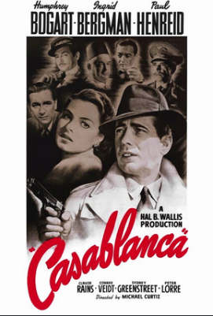

Clásico Imperdible

Drama / Romance
★ 9.2
Casablanca
Dirigida por Michael Curtiz (1942)
En el Marruecos de la Segunda Guerra Mundial, el propietario de un club nocturno debe decidir si ayuda a su antiguo amor y a su esposo a ponerse a salvo.